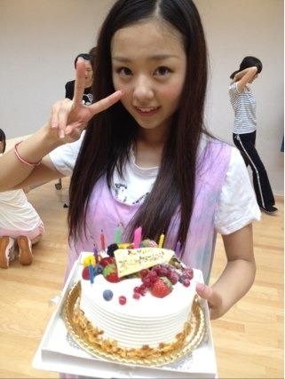
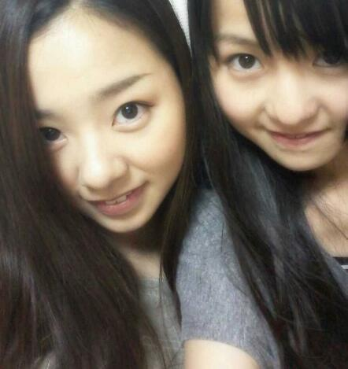

| 2012/07 27 Fri | 川村真洋 誕生日から3日☆...日付か わっちゃったけど♪ , メンバ ーへ ろってぃー♪ |
ほっほ〜い+^ω^+
ろってぃーblogでぇ−す♪ ))

みなさぁ〜ん☆★
お誕生blog コメントたくさん
してくれて
本当に ありがとう*^ω^*
500件近くのコメントを
全部読ましてもらいました。にっ
...
うっれ しっ いなぁ〜 ♪にっ
あー
嬉しい気持ちだなぁ〜*^^*
照れちゃうなぁ〜 〃ω〃笑
ありがとうございます^^
皆様からのコメント
読んでいると
楽しい気持ちになって
笑ったり
真剣に考えたり
涙ちょちょぎれそうになってる
自分がいました*^^*
メンバーからも祝ってもらったり
メールや音声メッセージが
きたり,
プレゼントをもらったり
17歳のお誕生☆は
最高に幸せな日でした。
でね,この前メンバー☆への
メッセージかけなかったから
今から書きますね...(⌒‐⌒)
Dear メンバーへ☆
みんな,まひろが誕生日の日
blogに まひろのこと
書いてくれてたの
全部読んだよ*^^*
本当ありがと♪
多くが
『普段はふわふわしてるのに... 』
って言葉があったけど
そんな あーしはフワフワ
しとるのかねっ>ω< 笑
でも本間 うれしかった〃ω〃
すごい幸せに感じたよ*^^*
あすか♪の
『亀の甲羅がひっくり返った』
って 表現にはびっくりした><
まだ 13歳だのに... すごい*^^*
と思ったようっ!
ありがとねいっ))
まひろ かつぜつ悪いし
しゃべってると自信なくなってきて
段々 声小さなってきて
何しゃべってるか
よう分からん時あると思うし
マミーに言われてきずいたんやけどなぁ〜,^ε^笑
朝から テンション高くしたり
意味分からんことばっか
してしまうけど...
これからもし続ける 笑
変子かもしらんけど
これからもよろしくねっ(⌒‐⌒))
あの, 思ったことは
ちゃんとゆってくれて
大丈夫だからねっ*^^*
トイレでは静かにしろ。
とか
チョコレート顔につけすぎやねん。
とか。
癖やねん ♪
なおらんねん *^^*笑
なおそうとしてないねん♪にっ
冗談。
もうあんな チョコレート
顔につけまくったり
してません=・ω・=♪
皆に心配かけちゃったり
色々とあるかもしらんけど
これからもよろしくねっ*^^*
乃木坂46が結成されてから
もうすぐ1年がたつけど
まあそれぞれ
大変だったよね・ω・`。)
でも みんな１人１人が
本当になんか
力を持った子だと思うし
前見て 夢見て
頑張り続けよっ?・ω・)
あと
まひろも みんなのこと
大好きっ・ω・〃))
なんかあったら
いつでも話聞くし
相談のるし
いつでもたよってね*・ω・*
以上っ)) ろってぃー♪でした。
読んでくれて
ありがとうございます(*^^*)
そろそろおやすみの時間だな`・ω
よしっ
みなさん
おやすみなさい〃ε〃ノシ

まりかと...